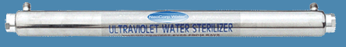
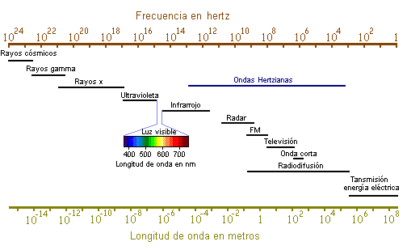
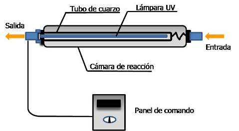

........Literatura>>>Desinfección de agua por luz ultravioleta
Existen algunos medios de desinfección mundialmente utilizados. Entre ellos destacamos el cloro, la luz ultravioleta y el ozono. Las diferentes formas de desinfección con cloro y derivados son las más utilizadas actualmente. Sin embargo, la luz ultravioleta y el ozono han avanzado notablemente como medios de desinfección.

La luz ultravioleta constituye una parte del espectro electromagnético, con longitudes de onda entre 100 y 400 nanómetros (nm). Cuanto menor la longitud de onda, mayor la energía producida. Las lámparas más usadas de baja presión de vapor de mercurio tienen una longitud de onda de 253.7 nm. Por lo tanto, la banda de UV-C es la más apropiada para la eliminación de microbios. La banda de UV de vacío (UV-V), específicamente con una longitud de onda de 185 nm, es apropiada para la producción de ozono (O3). Las lámparas de luz ultravioleta y las fluorescentes son similares.

Figura1. Espectro electromagnético
La luz ultravioleta es producida como resultado del flujo de corriente a través del vapor de mercurio entre los electrodos de la lámpara. Las lámparas de baja presión de mercurio producen la mayoría de los rayos con longitud de 253.7 nm. Esta longitud es muy próxima a la longitud de 260 a 265 nm, la más eficiente para matar microbios. La principal diferencia entre la lámpara germicida y la fluorescente es que la germicida es construida con cuarzo, mientras que en la fluorescente se usa vidrio, con una capa interna de fósforo que convierte la luz UV en luz visible. Colisiones entre electrones y átomos de mercurio provocan emisiones de radiación ultravioleta, la que no es visible al ojo humano. Cuando estos rayos colisionan con el fósforo, éstos fluorescen y se convierten en luz visible. El tubo de cuarzo transmite el 93% de los rayos UV de la lámpara, mientras que el vidrio (vidrio blando) emite muy pocos.

Figura 2. Partes en sistema de desinfección por luz Ultravioleta.
Cómo funciona la desinfección
El término microorganismo es muy amplio ya que incluye varios grupos de gérmenes patógenos. Difieren en forma y ciclo de vida, pero son semejantes por su pequeño tamaño y simple estructura relativa. Los cinco grupos principales son virus, bacterias, hongos, algas y protozoarios. Observando una célula básica de bacteria, nos interesa la pared de la célula, la membrana citoplasmática y el ácido nucleico. El blanco principal de la desinfección mediante la luz ultravioleta es el material genético (el ácido nucleico). Los microbios son destruidos por la radiación ultravioleta cuando la luz penetra a través de la célula y es absorbida por el ácido nucleico. La absorción de la luz ultravioleta por el ácido nucleico provoca una reordenación de la información genética, lo que interfiere con la capacidad reproductora de la célula. Por consiguiente, los microorganismos son inactivados por la luz UV como resultado del daño fotoquímico que sostiene el ácido nucleico. El ADN es una molécula en forma de doble hélice, compuesta de bases nitrogenadas (adenina, timina, citosina y guanina), ver Figuras 3.
El ADN almacena toda la información necesaria para crear un ser vivo. El gene es la unidad de ADN capaz de sintetizar una proteína. El cromosoma es una secuencia larga de ADN parecida a un hilo. El genoma es el conjunto completo de los genes de una especie.
La alta energía asociada a la corta longitud de onda (240 – 280 nm) es absorbida por el ARN y el ADN de la célula. La máxima absorción de la luz ultravioleta por el ácido nucleico, ADN, ocurre con una longitud de onda de 260 nm. Una célula que no puede ser reproducida es considerada muerta o inactivada, porque ya no se reproducirá.
Figura 3. Estructura de ADN en una bacteria y lámpara UV.
Desinfección vs. Esterilización
Esterilización es cuando se produce la eliminación total de patógenos por debajo de un nivel de medición especificado. La esterilización es definida como una reducción de contaminantes igual o superior a 8 logs, 10-8, o el 99.999999%.
Desinfección significa la reducción de la concentración de patógenos a niveles no infecciosos.
La desinfección alcanza varios niveles de reducción:
1 log=10-1=90%
2 log=10-2=99%
3 log=10-3=99.9%
4 log=10-4=99.99%
5 log=10-5=99.999%
Parámetros de calidad del agua
Para efectuar la desinfección de agua potable e industrial, deben satisfacerse ciertas condiciones:
- Filtro de partículas de 5 micras, ya que los virus o bacterias pueden no ser alcanzados cuando existen partículas.
- Dependiendo de la calidad del agua, podrán ser necesarios filtros de carbón para la retención de material orgánico, para evitar que interfiera en la transmisión de la luz ultravioleta.
Será necesario reducir los niveles de hierro y de manganeso a 0.3 partes por millón (ppm) y 0.05 ppm, respectivamente, y reducir la dureza por debajo de 100 ppm.
Hierro, manganeso y dureza (calcio y magnesio) pueden precipitarse en el tubo de cuarzo, lo que perjudicará la transmisión de luz.
Dado que los filtros de carbón y resinas pueden acelerar la multiplicación de bacterias, los reactores de ultravioleta deben ser instalados al final de la línea, es decir, detrás de los mismos.
Dosificación de luz UV
La siguiente fórmula muestra la manera de calcular la dosificación de luz UV:
Dosificación = Intensidad × Tiempo de Retención
Donde:
Dosificación, intensidad medida en microwatt-segundos por centímetro cuadrado (μWs/cm2).
El tiempo es medido en segundos (s).
NOTA: 1,000 μWs/cm2 = 1 mWs/cm2 = 1mJ/cm2 (mWs = miliwattsegundos; mJ = milijoules)
Factores que afectan la desinfección eficaz con UV
• Calidad del agua
• Transmisión de luz UV
• Sólidos en suspendidos
• Nivel de orgánicos disueltos
• Dureza total
• Condición de la lámpara
• Limpieza del tubo de cuarzo
• Tiempo de uso de la lámpara
• Tratamiento del agua antes de aplicar luz UV
• Flujo
• Diseño del reactor
Estos factores están relacionados principalmente con la exposición de los contaminantes en el agua y la transmisión eficiente de luz UV para una activación adecuada. Los problemas incluyen el sombreado (cuando los contaminantes pequeños son interferidos por otros contaminantes presentes en el agua), incrustación o decoloración del tubo de cuarzo, intensidad de la lámpara y flujos no adecuados.
Transmisión de luz UV
La transmisión de luz UV es definida como el porcentaje de la luz UV con una longitud de 254 nm no absorbida después de pasar a través de una espesura de agua de 1 cm. La transmisión depende de los materiales disueltos y suspendidos en el agua. Las transmisiones reducidas disminuyen la intensidad de la luz en el agua, requiriendo, por lo tanto, un mayor tiempo de exposición para que el agua reciba una dosis apropiada. La claridad visual del agua no es un buen indicador de la transmisión, ya que el agua que es clara para la luz visible puede absorber o comprimir la longitud de onda de la luz ultravioleta.
La mejor forma de medir la transmisión de luz ultravioleta en el agua es por medio de una pequeña muestra en un aparato llamado fotómetro, que mide específicamente la transmisión de la longitud de onda de 254 nm en el agua. El fotómetro informa el resultado en porcentajes. Por ejemplo, transmisión: 25%, 70%, 79%, 85%, 99%, etc.
Factores de diseño de un dispositivo UV
La cámara de agua o el reactor deben ser diseñados de tal manera que asegure que todos los microbios reciban una dosis suficiente de exposición a la luz ultravioleta. Si no, algunos rayos ultravioleta experimentan el llamado corto-circuito, es decir, los microbios pasan por la cámara sin recibir una dosis suficiente de luz ultravioleta.
Actualmente esas cámaras son diseñadas de la misma forma que aviones y carros, es decir, son probadas en túneles aerodinámicos. Al diseñar los reactores se utilizan los sistemas CFD (computacional fluid dynamics—dinámica de fluido computacional). Estos son programas que muestran cómo dirigir el flujo de agua y la trayectoria de partículas a través de la cámara, a fin de optimizar el diseño.
Sin duda la prueba final con análisis del agua antes y después del proceso ultravioleta, variando el flujo, la cantidad de contaminación antes y después de la luz ultravioleta, es lo que nos dará la indicación final del producto.
Tecnología de lámparas
Básicamente, se utilizan dos tipos de lámparas en un proyecto de luz ultravioleta:
1) Presión de mercurio baja
2) Presión de mercurio mediana
Actualmente se utiliza un nuevo tipo de lámparas con baja presión de mercurio: lámparas de baja presión y alta potencia (LPHO). La ventaja reside en la reducción del número de lámparas, lo que aumenta la potencia del sistema y disminuye el costo. A continuación se presenta una relación de microorganismos y la dosificación necesaria para su desactivación en un 90% y 99%, ver Tabla 1.
MICROORGANISMOS |
1 Log |
2 Log |
MICROORGANISMOS |
1 Log |
2 Log |
BACTERIAS |
|
|
VIRUS |
|
|
Bacillus anthracis |
4.5 |
8.7 |
MS-2 Coliphage |
18.6 |
-- |
Bacillus subtilis, esporas |
12 |
22 |
F-específica bacteriophage |
6.9 |
-- |
Bacillus subtilis |
7.1 |
11 |
Hepatitis A |
7.3 |
6.6 |
Campylobacter jejuni |
1.1 |
- |
Influenza virus |
3.6 |
-- |
Clostridium tetani |
12 |
22 |
Polio virus |
5.77 |
-- |
Corynebacterium diphtheriae |
3.4 |
6.5 |
Rotavirus |
8.11 |
-- |
Escherichia coli |
3 |
6.6 |
|
|
|
Klebsiella terrigena |
2.6 |
- |
PROTOZOARIOS |
|
|
Legionella pneumophila |
0.9 |
2.8 |
Giardia lamblia |
1.1 |
8.1 |
Sarcina lutea |
20 |
26.4 |
Cryptosporidium parvum |
2.5 |
21.7 |
Mycobacterium tuberculosis |
6 |
10 |
|
|
|
Pseudomonas aeruginosa |
5.5 |
10.5 |
ALGAS |
|
|
Salmonella enteritidis |
4 |
7.6 |
Azul-verde |
300 |
600 |
Salmonella paratyphi |
3.2 |
- |
Chlorella vulgaris |
12 |
22 |
Salmonella typhi |
2.1 |
- |
|
|
|
Salmonella typhimurium |
3 |
6 |
LEVADURA |
|
|
Shigella dysenteriae |
2.2 |
4.2 |
Saccharomyces cerevisiae |
7.3 |
13.2 |
Shigella flexneri
(paradysenteriae) |
1.7 |
3.4 |
|
|
|
Shigella sonnei |
3 |
- |
|
|
|
Staphylococcus aureus |
5 |
6.6 |
|
|
|
Streptococcus faecalis |
4.4 |
- |
|
|
|
Streptococcus pyogenes |
2.2 |
- |
|
|
|
Vibrio cholerae
(V.comma) |
- |
6.5 |
|
|
|
Yersinia enterocolitica |
1.1 |
- |
|
|
|
Tabla 2. Dosis de UV (mWs/cm2) para inactivación 1 Log o 2 Log de población microbiana
|
|
|
(a) Vibrio cholerae |
(b) Streptococcus faecalis |
(c) Influenza |
|
|
(d) Hepatitis A |
(e) Rotavirus |
Ventajas en el uso y mantenimiento de luz UV:
- No genera subproductos
- No se necesitan tanques de contacto; apenas algunos segundos son suficientes para la desinfección
- No presenta riesgos al usuario
- El mantenimiento es muy simple, pues necesita solamente un reemplazo anual de la lámpara y limpieza del tubo de cuarzo de vez en cuando. Dependiendo de la calidad del agua, la limpieza puede no ser necesaria
Otras aplicaciones de UV
Efluentes: La gran ventaja del uso de luz ultravioleta en efluentes es que no se agrega nada al agua, es decir, cuando el efluente es descargado en un cuerpo acuático, el agua está prácticamente libre de contaminantes; cumple con los límites de microorganismos y no transmite subproductos nocivos al medio ambiente.
Descomposición de ozono: Con dosificación apropiada, el proceso ultravioleta transforma el ozono en oxígeno: 2O3 + UV254 = 3O2
Uso de luz UV para decloración:
Dosis elevadas de ultravioleta, utilizándose lámparas de presión mediana, reducen los niveles de cloro en el agua. Esta solución es utilizada cuando no es deseable el uso de filtros de carbón activado o de sodio metabisulfito.
Procesos de oxidación avanzada para efluentes
Reducción de Carbono Orgánico Total (COT): Otra aplicación importante de la luz ultravioleta es el uso en procesos de oxidación avanzada, utilizándose, por ejemplo, UV + H2O2 (peróxido de hidrógeno), UV + O3 (ozono) y UV + TiO2 (dióxido de titanio).
Cuando se oxidan los efluentes de las industrias químicas, farmacéuticas o cosméticas mediante los procesos enumerados arriba, se produce el radical OH-, que quiebra las cadenas complejas de efluentes y las transforma en subproductos más simples, y hasta en CO2 + H2O.
La tecnología de luz ultravioleta de hoy puede ser aplicada en varias áreas, y el desarrollo de nuevos productos con mayor poder de desinfección y menor precio es actualmente el gran objetivo de los principales fabricantes.
Regresando líneas arriba cloro, luz ultravioleta y ozono, estas tecnologías no son concurrentes, sino complementarias. Los sistemas avanzados de tratamiento de agua potable, pura o ultrapura, muchas veces las tres tecnologías en un mismo proyecto.
Desafortunadamente, la situación caótica que atraviesa nuestro planeta nos da un panorama poco alentador. La carencia de agua potable, y las condiciones ambientales peligrosas e insalubres se encuentran a la orden del día. Por este motivo, la prevención de enfermedades está orientada a todos los grupos sociales mediante la mejora de la calidad de este preciado recurso. Por esta razón el mundo ha puesto la mirada en la luz ultravioleta, debido a los extensos beneficios y ventajas que ofrece. En efecto, podemos concluir que evidentemente esta tecnología cumple con las condiciones y requerimientos actuales, siendo el método de desinfección idóneo para el futuro.
Bibliografía
- Desinfección Por Luz Ultra Violeta. Tarrán, Elio Pietrobon. Agua Latinoamérica, Volumen 2 - Número 2, 1 de Marzo de 2002, Paginas 1-4.
Podemos enviar cualquier equipo a cualquier parte del mundo, por el medio que usted elija: DHL, Estafeta, Fedex, Multipack, UPS, vía marítima, vía terrestre en flete por cobrar o pre-pagado.
Si no encuentra listado en nuestro sitio web el producto que busca puede contactarnos vía telefónica o correo electrónico, un ingeniero de ventas será asignado para responder con prontitud a su solicitud. |